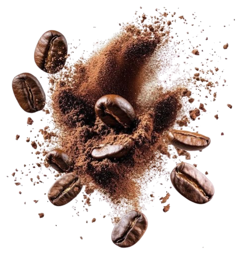
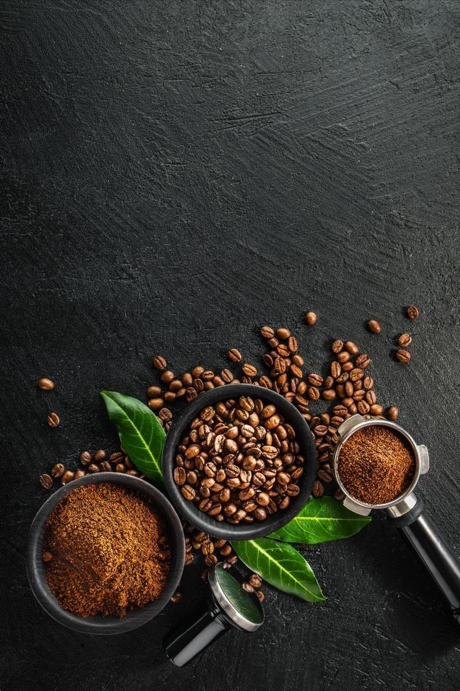

Dari Biji Pilihan Hingga Kemasan Terbaik.
Melalui proses sangrai presisi hingga pengemasan higienis, kami mengolah biji kopi pilihan untuk mengunci aroma, cita rasa, dan kesegaran terbaiknya. Temukan solusi pengolahan lengkap sesuai kebutuhan bisnis atau seduhan Anda di Layanan Kami.
Layanan Terbaik untuk Biji Kopi
Kami menghadirkan layanan pengolahan biji kopi berkualitas, mulai dari penyangraian hingga pengemasan untuk menjaga aroma, cita rasa, dan kesegaran kopi.
Penyangraian Biji Kopi
Biji kopi disangrai dengan tingkat kematangan yang disesuaikan untuk menghasilkan aroma khas dan cita rasa terbaik pada setiap seduhan.
Penggilingan Biji Kopi
Kami menyediakan penggilingan biji kopi dengan tingkat kehalusan yang dapat disesuaikan dengan metode penyeduhan, mulai dari kasar hingga halus.
Pengemasan Biji Kopi
Biji kopi dikemas menggunakan kemasan yang sesuai untuk membantu menjaga kesegaran, aroma, dan kualitas produk hingga sampai ke tangan pelanggan.
Menemukan Kualitas di Balik Setiap Biji Kopi.

Premium Coffie Beans
Selamat datang di Coffee Beans. Kami hadir untuk memperkenalkan kekayaan cita rasa dan kualitas biji kopi pilihan. Setiap biji kopi memiliki karakteristik, aroma, dan keunikan tersendiri yang menjadikannya istimewa.
- Biji kopi pilihan dengan kualitas terbaik
- Diproses dengan cermat untuk menjaga kualitas
- Memiliki aroma dan karakter rasa yang khas
Kami percaya bahwa kualitas secangkir kopi berawal dari biji kopi yang berkualitas. Karena itu, kami berkomitmen menghadirkan biji kopi pilihan bagi para pencinta kopi
Ragam Biji Kopi Pilihan Kami
Setiap daerah penghasil kopi punya karakter yang berbeda. Kenali beberapa biji kopi pilihan kami beserta cita rasa khas yang dihasilkan dari proses pengolahan terbaik.
Arabika Gayo
Berasal dari dataran tinggi Aceh. Memiliki aroma floral dengan sentuhan cokelat dan rasa asam yang lembut.
CATATAN RASA: FLORAL, COKELAT, SITRUSRobusta Lampung
Tumbuh di daerah Lampung dengan kafein lebih tinggi. Rasa kuat, pahit khas, dan cocok untuk espresso.
CATATAN RASA: COKELAT, KACANG, PAHITKintamani Bali
Kopi khas Bali dengan tingkat keasaman cerah dan aroma buah yang segar, cocok untuk metode seduh manual.
CATATAN RASA: SITRUS, BERI, MANISMandheling Sumatera
Dikenal dengan body yang tebal dan aroma tanah yang khas. Memberikan sensasi hangat dan tahan lama di lidah.
CATATAN RASA: TANAH, REMPAH, COKELATFlores Bajawa
Tumbuh di sekitar gunung berapi Flores. Kombinasi rasa buah merah dan kacang dengan aftertaste yang manis.
CATATAN RASA: BUAH MERAH, KACANG, MANISWamena Papua
Kopi dari dataran tinggi Papua dengan rasa buah tropis yang cerah dan tekstur ringan serta menyegarkan.
CATATAN RASA: TROPIS, FLORAL, SITRUSMari Bicara tentang Kopi
Punya pertanyaan, ingin memesan, atau bekerja sama? Kirimkan pesan melalui form di bawah atau hubungi kami langsung melalui kontak yang tersedia.
Alamat
Salatiga City, Jawa Tengah
Jam Kerja
Senin - Sabtu, 09.00 AM - 16.00 PM